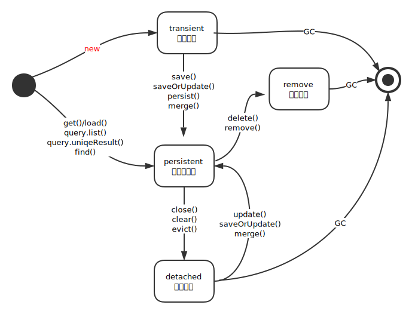

Hibernate
1 序
创建 hibernate 工程示例：
- 创建工程，引入 jar 包
- 创建配置文件 hibernate.cfg.xml, 配置数据库连接
- 编写实体类(
entity), 标明注解, 然后配置在 hibernate.cfg.xml 中 - 创建
SessionFactory, 获取Session, 通过操作实体类操作数据库。
2 Session
对象的三种状态：
Transient, 瞬时状态，指的是对象已经被初始化，但没有跟 hibernate 的 session 建立过联系，即数据库里没有数据对应。Persistent, 持久化状态，指的是对象在数据中有对应数据，对象有 id 值。它可能是通过 save 或 load 等方式得到的，并且在 session 缓存中有定义。Detached, 脱管状态，曾经被持久，在数据库中有数据对应。但是，在 session 缓存里没有记录。也许是 session 关闭了，也许是清空了。
状态之间可以进行转换，下面是大致的转换流程：

2.1 get/load/query()
- get/load 会优先在 session 缓存里寻找对象，如果找不到，再去查询数据库
- query 会直接查询数据库
- get 不懒，会立刻查询。如果没有找到，那么返回 null
- load 延迟加载，立刻返回一个代理对象。如果没有找到，那么抛出异常
LazyInitializationException!!!
2.2 flush/refresh()
flush 将 session 缓存里的数据同步到数据库，触发相应的 sql 语句。
以下情况，会触发 flush 操作：
- 调用 commit 的时候，会触发 session.flush() 操作。
- 执行 session.createQuery() 查询的时候，也会触发 flush 操作。
- 手动执行 flush 操作。
refresh 是将数据库里的信息，同步到 session 缓存。
2.3 clear/evict()
从 session 缓存中清理数据
2.4 save/persist()
都是用来将瞬时对象变为持久化对象，即将数据插入数据库，对应 insert 语句。
save 是 hibernate 原生的语法，persist 是 jpa 的语法。
在执行的时候，不会立刻插入数据，只有执行了 flush 操作，才真正触发数据库操作。
save/persist 方法会立刻为实体类对象生成主键。
他们的区别是, 如果在保存之前，重新手动赋予了主键：
- save 会忽视你的赋值
- persist 会抛异常
2.5 update/merge()
- 他们主要用来完成实体类对象的修改，对应的是 update 语句。
- 若更新一个持久化对象，可以不显式调用 update, 因为 flush 操作会触发 update
- 可以将一个脱管对象转换为持久化对象
- merge 是 jpa 中的语法
2.6 doWork
可以将 jdbc 的 connection 对象暴露出来，用于插入一些 jdbc 操作语法。
3 Identifier
-- JPA 默认 @GeneratedValue(strategy = GenerationType.AUTO/IDENTITY/SEQUENCE/TABLE) -- JPA 定制序列/Table @GeneratedValue(generator = "xxx") @SequenceGenerator(name = "xxx", sequenceName = "seq_xxx", associateSize = 1) @TableGenerator(name = "xxx", table = "tb_xxx") -- Hibernate 格式的 generator: @GeneratedValue(generator = "yyy") @GenericGenerator(name = "yyy", strategy = "native") @GenericGenerator(name = "yyy", strategy = "uuid2") @GenericGenerator(name = "yyy", strategy = "table")
4 Association
4.1 1-N
一对多的关系，在数据库的角度，需要使用外键维护这种关系。
一般情况下，在多的一边的表上，建立一个外键映射到另一个表。
比如，有两个表 author, book 一般而言，book 的定义类似是这样的：
create table book { bookid int primary key, name varchar2(20) not null, price float, publish_date date default sysdate, -- 下面字段用来维护跟作者的关系 -- 它是一个外键约束 authorid references author }
book/author 分别对应实体类 Book/Author，我们可以在其中任意一个实体类中，设置他们的关系。
如果只是在其中一个中设置关系，那么叫“单边关系”、“单向关联”，否则是“双向关联”。
其中最常用的是 多对一的单向关联 和 多对一的双向关联。
多对一的单向：
public class Author { @Id @GeneratedValue private long id; private String name; } public class Book { @Id @GeneratedValue private long id; private String name; private FLoat price; // 只是在多的一段设置关系。这是非常常用的一种方式。 // 用 @JoinColumn 定制外键字段的名字 @ManyToOne @JoinColumn private Author author; }
多对一的双向关系：
// 多的一端，即主端，需要负责维护关系 public class Book { @Id @GeneratedValue private long id; private String name; private FLoat price; // 只是在多的一端设置关系。这是非常常用的一种方式。 // 用 @JoinColumn 定制外键字段的名字 @ManyToOne @JoinColumn private Author author; } // 一的一端，即从端，需要当甩手掌柜 public class Author { @Id @GeneratedValue private long id; private String name; // 不要让双方都去维护关系，不然会有冲突或重复。 // 一般情况下，需要让多的一端维护关系即可。这里用 mappedBy 表名，自己当甩手掌柜。 @OneToMany(mappedBy = "author") private Set<Books> books = new HashSet<>(); }
在数据插入的时候，要先保存一的一端，再保存多的一端，否则，会有冗余的 SQL 语句。
4.2 M-N
- 多对多的关系，需要使用中间表维护双方关系。对应的注解为
@ManyToMany - 必须为双方制定从属关系，也就是将维护关系的责任交给其中一个实体类(
mappedBy)，从而避免重复或冲突。 - 可以使用
@JoinTable对中间表进行定制
例子：
@Entity public class Emp { @ManyToMany // 负责关系的维护 @JoinTable(...) private Set<Project> projects = new HashSet<>(); } @Entity public class Project { @ManyToMany(mappedBy = "projects") // 甩手掌柜 private Set<Emp> emps = new HashSet<>(); }
4.3 1-1
两种方式：
- 在其中一个表上创建一个列，保存另一个表的主键。即外键关联。
- 两个表，有关联的数据，使用相同的主键。即主键关联。
外键关联:
@Entity public class Person { @Id @GeneratedValue // 主键自动生成 private long id; @OneToOne @JoinColumn // 负责维护外键 private IdCard idcard; } @Entity public class IdCard { @Id @GeneratedValue // 主键自动生成 private long id; @OneToOne(mappedBy="idcard") // 甩手掌柜 private Person person; }
主键关联:
@Entity public class Person { @Id // 主键*不要*自动生成!! private long id; @OneToOne // 负责维护外键，将外键映射到主键。即将另一张表的外键映射到本表的主键。 @MapsId @JoinColumn(name = "id") private IdCard idcard; } @Entity public class IdCard { @Id @GeneratedValue // 主键自动生成 private long id; @OneToOne(mappedBy="idcard") // 甩手掌柜 private Person person; }
4.4 Embed
这不属于关联关系，只是一种包含：
@Entity class Person { @Embedded private Name name; } @Embeddable class Name { String firstName; String lastName; }
5 Inheritance
5.1 SINGLE_TABLE
将所有的东西塞进 一张表 中，即所有的子类跟父类使用一张表， 在这张表中使用“区别列”(DiscriminatorColumn)来区分各个类。
这是默认的继承策略。
@Entity @Inheritance(strategy = InheritanceType.SINGLE_TABLE) @DiscriminatorColumn(name = "xxx") // 可以定制分割列的名字 public class Animal {} @Entity @DiscriminatorValue("狗") // 可以定制 public class Dog extend Animal {}
它并不符合范式，但也有自己的优点：
- 使用了区别的列
- 只使用了一张表，所以查询速度快
- 缺点：子类的独有列，不能添加唯一/非空约束
- 缺点：太多冗余字段
5.2 JOINED
是一种完全“符合范式”的设计：
- 将所有共有的属性提取到父表中
- 仅将子类特有的属性保存到子表中
- 父表跟子表通过外键的方式建立关系
- 如果查询子表的详细数据，通过关联查询关联相关表即可
@Entity @Inheritance(strategy = InheritanceType.JOINED) public class Animal { } @PrimaryKeyJoinColumn(name = "xxxxid") // 可以定制关联主键 public class Dog extend Animal { }
总结：
- 优点：没有任何冗余
- 缺点：查询的效率低，因为需要关联各张表
5.3 TABLE_PER_CLASS(union)
每个类对应一张表，大家互相隔离，各自为政!
@Entity @Inheritance(strategy = InheritanceType.TABLE_PER_CLASS) public class Animal { } @Entity public class Dog extend Animal { }
总结：
- 优点：独立，自由，查询快
- 如果只查询子类，那么不需要任何关联；但如果查询父类的话，需要使用 Union 关联各表
- 缺点：存在冗余字段
- 缺点：如果要更新父类中的字段，每个子表都需要去更新
5.4 MappedSuperclass
如果父类不是 Entity，只是为子类提供公共属性，那么，将其注解为 @MappedSuperclass 即可。
@MappedSuperclass abstract public class Person { @Id private long id; @Column private String name; } @Entity public class Girl extend Person { private String wechat; } @Entity public class Boy extend Person { private String address; }
**
6 级联(Cascade)
比如说，一个部门有很多员工，它们是多对一的关系。如果我们要删除1号部门：
Dept d = session.load(Dept.class, 1L); session.delete(d);
我们会删除失败并得到一个异常，因为部门被员工数据引用，所以要删除部门前，需要先将引用到部门的所有员工删掉。
如果我们不想手动删除部门内部员工，那么可以采取 级联操作，即对 Dept 实体类中的 emps 属性这样设置：
@OneToMany(mappedBy="dept", cascade=CascadeType.REMOVE) private List<Emp> emps = new ArrayList<>();
那么，再去执行删除操作的时候，部门、连带它所有的员工，都会被删除。一步到位，快速绝伦。
除了删除操作，级联的类型还有：
- CascadeType.PERSIST
- CascadeType.MERGE
- CascadeType.REFRESH
- CascadeType.ALL (快捷方式，代指所有)
虽然 cascade 会让我们的代码更简介，使用更方便。但是，在工业环境中，不建议使用 cascade 设置。
6.1 删除数据的方式
第一种方法：
// 优点：快速简洁 // 缺点：不能关联删除 Product product = new Product(); product.setId(44L); session.delete(product);
第二种方法：
// 优点，能关联删除 // 缺点，不直接 Product product = session.load(Product.class, id); // load, not get session.delete(product);
第三种方法：
// 优点，更灵活 // 缺点，跟第一种方式一样，不能删除关联 int result = session .createQuery("delete Product where id = :id") .setParameter("id", 44L) .executeUpdate();
7 查询
7.1 get/load
根据主键进行查询。这是最基本，最高效的一种查询手段。
7.2 Query
//// 基本语法 String hql = "from xxx where yyy"; Query query = session.createQuery(hql); query.setParameter("aaa", "bbb"); query.uniqueResult(); // 可以用链式语法简化语句 session.createQuery("from xxx where yyy").setParameter("aaa", "bbb").uniqueResult(); //// select 语句 和 返回值 from Emp e where e.name = 'x'; // 默认不需要写 select, 那么会将结果封装到 Emp 对象中 select e from Emp e where e.name = 'x'; // 上面的语句，跟此句是一致的 select name from Emp; // 返回值：Object select name, salary from Emp; // 返回值：Object[] select new list(name) from Emp; // 返回值：ArrayList select new map(name, salary) from Emp; // 返回值：HashMap select new map(name as name, salary as sal) from Emp; // 定制 key 值 select new Boy(name, salary) from Emp; // 返回值：Boy 对象 //// 得到返回结果 session.createQuery("from Book", Book.class).uniqueResult(); session.createQuery("from Book", Book.class).list(); session.createQuery("from Book", Book.class).iterate().next(); // 过滤操作 session.createFilter(customer.getOrders(), "where price > 5000").list(); //// 聚合函数及其他运算符的使用 // 返回值：Object[] select max(salary), avg(salary), sum(salary) from Emp; // group by select max(salary), avg(salary), sum(salary) from Emp e group by e.department; // 将结果封装到 map 中 select new map(max(salary) as maxsal, avg(salary) as avgsal, sum(salary) as sumsal) from Emp e group by e.department; // 运算符和函数 select sum(salary + nvl(commission, 0)) as res from Emp; //// join // Query 不能使用 JOIN 抓取策略。Query 默认使用 select 语句进行关联数据的加载。 // 如果想强制使用 join 语句，需要通过 hql 语句指定： /// 1. 隐式设置 from Emp e where e.department.location = 'NEW YORK'; /// 2. 显式调用 // fetch 决定最后结果的形式： // - 有 fetch: [Emp, Emp, ...] // - 无 fetch: [[Emp, Dept], [Emp, Dept]] from Emp e join e.dept where e.name = 'xxx'; from Emp e left join e.dept where e.name = 'xxx'; from Emp e left join fetch e.dept where e.name = 'xxx'; //// 分页、总行数 long count = session.createQuery("select count(*) from Emp", Long.class).uniqueResult(); long count = session.createQuery("select count(*) from Emp", Long.class).iterate().next(); // oracle: rownum/row_number() // sqlserver: top/row_number() // mysql/sqlite: limit x offset y // hibernate 通过下面语句屏蔽了底层细节: /// 从 80 行开始，取 5 行记录 session.createQuery("from xxx").setFirstResult(80).setMaxResults(5).list(); //// delete & update delete Emp where name = :oldName; update Emp set name = :newName where id = :id; // 级联操作的设置，对 Query 也是无效的，比如，想删除一个部门，需要先删除员工，再删部门： delete Emp e where e.department.deptno = '#DN'; delete Dept where deptno = '#DN';
7.3 Criteria
Criteria，标准、规范，它是 Criterion 的复数形式。
优势:
- 面向对象
- 不用拼接sql，方便扩展
- 统一性，跨数据库
Criteria 接口: 表示特定类的一个查询
Criterion 接口: 表示一个限定条件
示例：
// Session 是 Criteria 的工厂 // Criterion 的主要实现由 Example、Junction 和 SimpleExpression // Criterion 一般通过 Restrictions 提供的工厂方法获得 List<Emp> emps = session.createCriteria(Emp.class) // 创建 .add( Restrictions.like("name", "K%") ) // 模糊 .add( Restrictions.gt( "salary", 2000F ) ) // 大于 .addOrder( Order.desc("salary") ) // 排序-1 .addOrder( Order.desc("commission") ) // 排序-2 .list(); // 约束可以按逻辑分组 List<Emp> emps = sess.createCriteria(Emp.class) .add( Restrictions.like("name", "K%") ) .add( Restrictions.or( Restrictions.ge( "salary", 3000F ), Restrictions.isNotNull("commission") ) ) .list(); // Property~Example 是添加约束的另两种方法 List<Emp> emps = session.createCriteria(Emp.class) .add(Property.forName("name").eq("KING")) // Property .add(Example.create(king)) // 将 king 上的数据封装成条件 .list(); //// 关联查询 List<Emp> emps = session.createCriteria(Emp.class) .createCriteria("depts") // vs. createAlias .add( Restrictions.eq("location", "NEW YORK") ) .list(); //// Projections 提供投影查询，并能分组聚合 // 投影条件 ProjectionList projectionList = Projections.projectionList() .add( Projections.property("dept") ) .add( Projections.rowCount() ) .add( Projections.max("salary") ) .add( Projections.sum("salary", "sum" ) ) .add( Projections.groupProperty("dept") ); // 查询结果 List<Object[]> rs = session.createCriteria(Emp.class) .setProjection( projectionList ) .addOrder( Order.asc("sum") ) .list();
7.4 NativeSQL
基本语法，默认的返回的结果为 Object[]:
session.createNativeQuery("select ename, sal from emp").list(); session.createNativeQuery("select * from emp").list(); session.createNativeQuery("select * from emp e, dept d where e.deptno=d.deptno and d.loc=:loc") .setParameter("loc", "NEW YORK") .list();
可以通过 addScalar() 设置返回类型，并限定结果:
// 下面的查询，得到的结果为 Object[], 包含两个元素：0:id / 1:name session.createNativeQuery("select * from emp where id=9999") .addScalar("empno", StandardBasicType.INTEGER) .addScalar("ename", StandardBasicType.STRING) .list();
也可以将结果封装到 Entity(实体类) 中:
// simplest session.createNativeQuery("select * from emp where sal > 2000") .addEntity(Emp.class).list(); // with alias session.createNativeQuery("select e.* from emp e where sal > 2000") .addEntity("e", Emp.class) .list(); // multiple session.createNativeQuery("select e.*, d.* from emp e join dept d using (deptno) where e.sal > 2000") .addEntity("e", Emp.class) .addEntity("d", Dept.class) .list();
将结果封装到普通对象(非实体类)。注意，必须要使用 addScalar() 设置字段:
List<Person> persons = session.createSQLQuery("select * from emp") .addScalar("ename", StandardBasicType.INTEGER) .addScalar("salary", StandardBasicType.FLOAT) .setResultTransformer(Transforms.aliasToBean(Person.class)) .list();
7.5 NameQuery
8 Query Strategy
一个实体类对象，里面有各个属性，这些属性的值可能不是在同一张表中。
为了效率，需要有一定加载策略，主要两个方面：
- when，属性数据的加载时机，是否在加载这个实体类的时候就立刻加载。
- how，通过什么样的语句加载，select/join/其他。
比如，有一个实体类，叫 Girl:
@Entity public class Girl { // 基本数据，保存在 girl 表中的数据: // select id, name from girl; // 这种数据的默认加载机制是： // 1. when: 立刻加载(EAGER) // 2. how: SELECT 语句 @Id private long id; private String name; // 关联数据，单结果，保存在 boy 表中的: // select * from boy where id='我的老父亲，您的编号'; // 这种方式的默认加载机制是： // 1. when: 立刻加载(EAGER) // 2. how: LEFT JOIN 连接 @ManyToOne private Boy father; // 关联数据，结果集，保存在 bag 表中的 // select * from bag where big_owner='女孩的编号'; // 这种属性数据的默认加载机制是： // 1. when: 延迟加载(LAZY) // 2. how: SELECT 语句 @OneToMany(mappedBy = "girl") private Set<Bag> bags = new HashSet(); }
如果我们调用 session.load(Girl.class, 1L), 会加载编号为 1 的女孩的数据。
她的数据分为三种：
- 基本数据，包含在 girl 表中的，比如
id/name。 - 关联数据/XtoOne，比如
father属性。 - 关联数据/XtoMany，比如
bags属性。
可以通过 fetch 属性/@Fetch 注解 定制加载策略，分别对应 when/how, 例：
@ManyToOne(fetch = FetchType.EAGER)// 定义加载的时机(when) @Fetch(FetchMode.SELECT) // 定义加载语句的样式(how) private Boy boyfriend;
- 如果 when 为
EAGER，默认的 how 为FetchMode.JOIN - 如果 when 为
EAGER，可以定制使 how 为FetchMode.SELECT/SUBSELECT - 如果 how 为
JOIN, 那么 when 只能是EAGER - 如果设置了
hibernate.default_batch_fetch_size或在实体类/集合上标注了@BatchSize, 会对LAZY属性加载采取批量优化。 @Fetch(FetchMode.SUBSELECT)可以优化 HQL 返回的列表的关联数据查询语句- JOIN 策略对 Query 查询无效，如需关联查询，在语句中显式调用 join 语句!
9 N+1 问题
比如，如果：
打印出编号大于10的部门中的所有员工姓名。
那么，语句大致如此：
String hql = "from Dept where depto > :dn"; List<Dept> depts = session.createQuery(hql, Dept.class) .setParameter("dn", 10) .list(); for(Dept dept: depts) { for(Emp emp : dept.getEmps()) { System.out.printf("部门: %s, 姓名: %s\n", dept.getName(), emp.getName()); } }
因为 @OneToMany 默认是 Lazy + SELECT 策略，所以，每个部门的员工只有使用的时候才去查询。
这就导致了上面的语句发送很多条 select 语句(N+1)，严重影响效率。
这就是 N+1 问题。
解决方案有主要有下面几种：
- 在 hql 语句中，使用 join 语句进行关联查询。
- 将 Dept#emps 的策略设置为
SUBSELECT方式。 - 采取批量抓取的优化方式(
BatchSize)，即在 Dept#emps 上面加上注解:@BatchSize(size=n)。 - 使用二级缓存。
10 缓存(Cache)
缓存分为三种：事务范围；应用范围；集群范围。
二级缓存是应用范围的缓存机制。适合放入二级缓存的数据：
- 很少修改，不会修改，或不允许被更改的数据（常量数据）
- 不是很重要，允许偶尔出错的数据
而一些重要的数据或者修改频繁的数据，是不适合放到缓存里的。
配置使用二级缓存过程：
- 加入 JAR 包支持：
"org.hibernate:hibernate-ehcache:5.2.11.Final"
- 配置 /ehcache.xml [可选]
- 在 hibernate.cfg.xml 中启用:
<prop key="hibernate.cache.use_second_level_cache">true</prop> <prop key="hibernate.cache.use_query_cache">true</prop> <prop key="hibernate.cache.region.factory_class">org.hibernate.cache.ehcache.SingletonEhCacheRegionFactory</prop>
- 配置要被缓存的类或集合
@Cachable @Cache(usage = CacheConcurrencyStrategy.NONSTRICT_READ_WRITE)
- 使用示例
session.createQuery("from Employee where id=7782").setCacheable(true).list(); session.createQuery("from Employee where id=7782").setCacheable(true).list(); session.createQuery("from Employee where id=7782").setCacheable(true).list();
11 锁(Lock)
Hibernate 中，设置锁定有下面三种方式：
session.load(Male.class, 1L, LockMode.WRITE) session.lock(m, LockModeType.WRITE); session.createQuery(hql).setLockMode(LockModeType.PESSIMISTIC_WRITE);
Hibernate 中锁的类型，分为两种：
- 悲观锁。使用数据库底层的
for update语句。数据会被锁定，直到事务结束。 - 乐观锁。使用实体类中的额外字段(
@Version)。它不会真正在数据上加锁，而是用版本号区别记录的不同。-- 它会在初次读取数据时将 version 一起读出，得到【版本号】，比如 10 -- 等到提交数据的时候，发送下面语句： update xxx set version = 10 + 1, ... where id = 2 and version = 10; -- 如果数据被别人修改过，那么 version 已经不是 10，所以上面语句不会更新到任何数据。 -- 同样，hibernate 会抛出下面异常： ---- javax.persistence.OptimisticLockException: Batch update returned unexpected row count from update [0]; actual row count: 0; expected: 1 -- 从而防止了数据的修改冲突。
悲观锁更适用于修改频率大，读取不多的数据。乐观锁适用于修改非常少，但读取特别多的数据。悲观锁需要耗费更多资源。